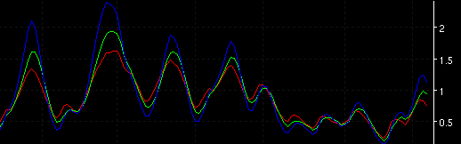

Least Mean Square Predictor - LMS

Description
Parameters
- Slow K Color
- 2 Day Color
- 5 Day Color
- K Line Type - The line type for this plot
- 2 Line Type - The line type for this plot
- 5 Line Type - The line type for this plot
- Slow K Label - The text to identify the plot
- Select Mode - Cycle or Counter Trend
- Slow K Period - The period used.
- Fast K Period - The period used
- Show 2 Day Prediction - Check if plot is shown.
- Show 5 Day Prediction - Check if plot is shown.
- Plot Test Pattern - A reference plot.
This is another indicator from the DSP (Digital Signal Processing) arena. Ehlers uses a least mean squares
technique to generate a 2 day and a 5 day prediction of a modified slow stochastic.
There are two modes:
Cycle mode where the indicator is plotted as a normal tabbed indicator and works best when there is rapid price movement and some cyclic content. Buy signals are generated when the SlowK line crosses over the 2 or 5 day prediction line.
The Counter Trend mode can be used in the same way but can also be ploted on the main chart with a low delay filter (e.g. EMA or even better LowPass) to indicate counter trend trades i.e. the signal to buy is when the low delay moving average crosses over the 2 or 5 day prediction.
More information can be found at www.mesa.co.uk/articles/ in the article "Linear Prediction". There are more cycle oriented articles there as well.
Some notes on the implementation:
1. Included in the preferences dialog is the abiblty to change both the fast and slow "K" values. This is
not in Ehler's original code. he uses only one value for slowK and recommends the value of 10 periods -- the default is set for 5 periods.
2. Also included is a "test pattern" which is a simple sine wave that replaces the price data. This pattern
will show how well the selected parameters can track the "ideal" signal and give some confidence to cyclic
doubters :-)
Actually, item 2 is a confidence check that the code is actually corrrect! These signals have a tendency to
wander in their initial directions and are rather difficult to trust without some confirmation -- in trading or coding....
Formula Reference:
| Syntax |
LMS(Fast K Period, Slow K
Period, Select Mode, Show 2 Day, Show 5 Day) |
| Function |
Select Mode is either "Counter
Trend" or "Cycle" value. Show 2 Day and Show 5 Day is a TRUE or FALSE
value. |
| Example |
LMS(5, 5, Cycle, TRUE, TRUE) |